4 Addressing Modes
Addressing Modes refers to how data is accessed, so that CPU can identify the actual operand or address location where operand is stored.
Immediate data
Register direct
Register indirect
Register indirect with offset
Register indirect with index register
Pre and post auto-indexing
4.1 Register Direct
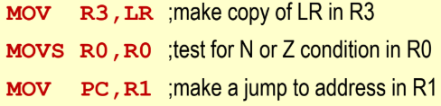
Execution of register direct instruction involves no access to memory.
4.2 Immediate Addressing
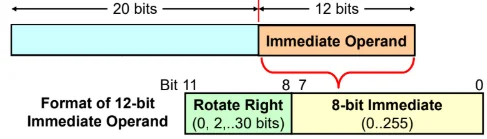
The 8-bit immediate value must be between 0 to 255.
That value is rotated right by bits, where is the value of the 4 rotate right bits. Hence range of rotation is .
Therefore, to check if a 32-bit hexadecimal number can be an immediate value:
The ’1’ bits must be maximum of 8 bits apart.
E.g. 0x111 . The furthest ’1’s are separated by 9 bits, so 0x101 cannot be an immediate value.The 8 bit immediate can only be rotated by an even number of bits.
E.g. 0x102 . The 8-bit immediate value would be , which has to be ROR by 31 bits (not even number). Hence, 0x102 cannot be an immediate value.
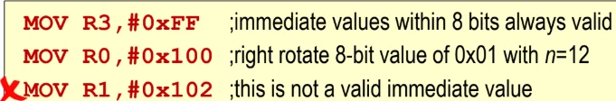
Exeuction of immediate addressing involves no access to memory.
Only a subset of immediate values is available since data is encoded within fixed-length instruction.
4.3 Register Indirect with Base Register
4.3.1 LDR Instruction
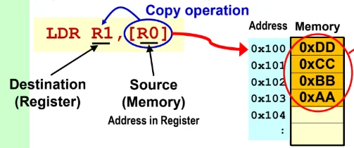
Data is fetched from that address in memory and coped into the destination operand.
4.3.2 STR instruction
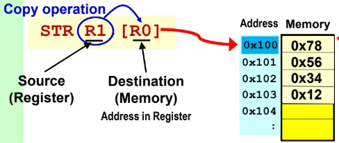
Data in source operand (on the left) is copied into that address in memory.
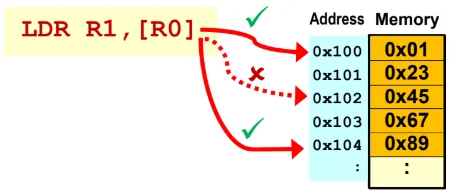
Otherwise, there may be performance degradation issues.
4.4 Register Indirect with Offset
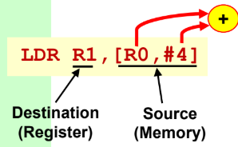
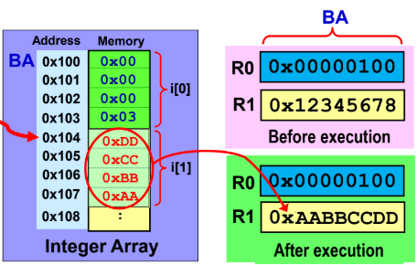
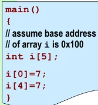
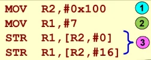
Note: When computing offset, each integer element occupies 4 bytes in memory.
Offset addressing does not change the indirect register’s content.
Used when the position of array element is known when coding the program.
4.5 Register Indirect with Index Register
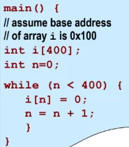
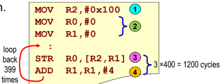
Base (indirect) register’s content is not changed, but index register’s (R2) value can be modified.
Used if array position is to be computed during run time.
4.6 Register Indirect with Autoindexing
Aim is to modify the indirect register’s content.
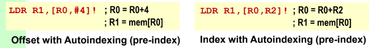
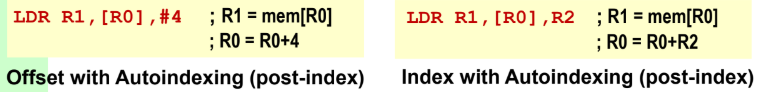
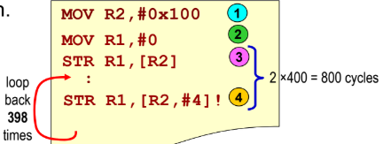
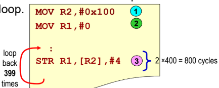
4.7 Stacks
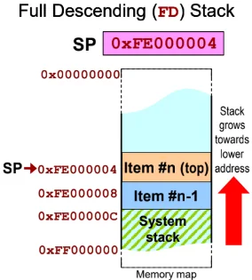
The 4 possible stack implementations:
Full Descending
Full Ascending
Empty Descending
Empty Ascending
FD stack implementation:
Full: SP points to top item of stack.
Descending: Stack grows towards lower memory addresses.
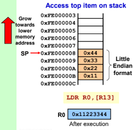
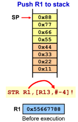
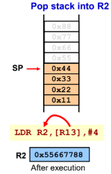
EA stack implementation:
Empty: SP points to unoccupied stack space.
Ascending: Stack grows towards higher memory address.
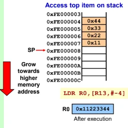
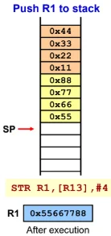
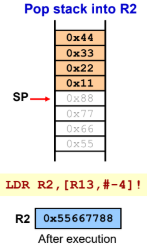
4.8 PC-related addressing modes
4.8.1 Absolute Jump
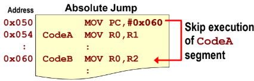
Loading a new address into PC will alter the sequence of program execution.
Absolute jump is not position-independent. If the whole chunk of code memory was shifted, the code would fail.
4.8.2 Relative Jump
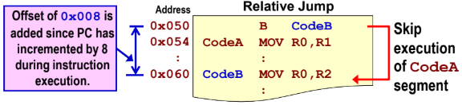
Due to FETCH-DECODE-EXECUTE pipeline architecture of the ARM processor, the PC points 8 bytes ahead of the current executed intsruction.
At , the PC value during execution is . To jump to CodeB at , the offset applied is .
4.8.3 Position-independent code
Relative jump supports position-independent code.
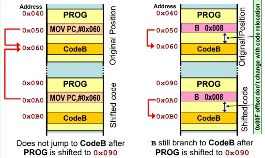
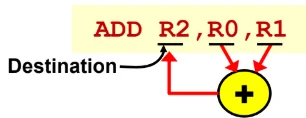
-bit instruction: 4-bits for condition flag, 8-bits for opcode, 4-bits for each register, hence only 12-bits left for only one immediate value.
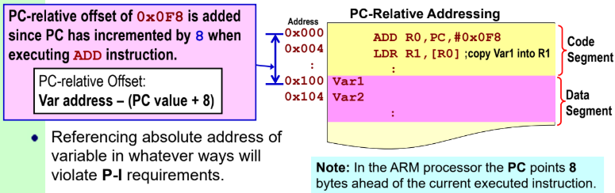